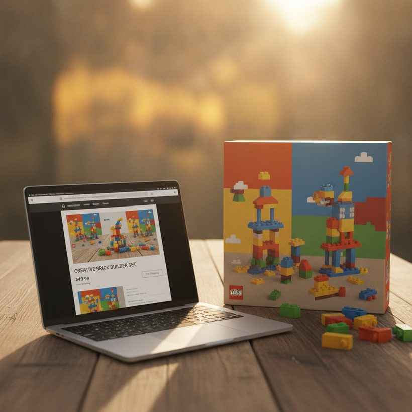

Dónde vender tu LEGO para sacar más dinero
Un repaso canal por canal de dónde se vende realmente LEGO por más, con comisiones típicas, niveles de esfuerzo y cómo tasar correctamente antes de publicar.
Ranking · 2026Si tienes una estantería de sets retirados o un cubo de piezas sueltas, la pregunta rara vez es si LEGO conserva su valor, sino dónde vender LEGO para quedarte con la mayor parte posible de ese valor. El mismo set puede reportar cantidades muy distintas según el canal, sus comisiones y cuánto trabajo estés dispuesto a asumir.
No existe un único mejor mercado. La respuesta correcta depende de qué vendas, con qué rapidez quieras el dinero y si estás moviendo sets de inversión precintados, sets usados completos o piezas a granel por kilo. A continuación comparamos los principales canales por comisiones, esfuerzo y pago típico, y luego cubrimos el paso que la mayoría de los vendedores se salta: tasar correctamente para no vender nunca por debajo de su valor.
Tasa antes de publicar
El mayor error es adivinar un precio a partir de los anuncios activos. Los precios que se piden en los anuncios activos son ilusiones; los precios vendidos son la realidad. Antes de elegir un canal, busca por cuánto se ha vendido realmente hace poco tu set exacto (por número y en tu estado de conservación). Una buena herramienta de tasación es BrickGains, que agrega datos de ventas reales de varios mercados para que puedas fijar un suelo y un techo realistas antes de comprometerte con una plataforma.
Basar tu precio en el historial de ventas logra dos cosas: evita que dejes dinero sobre la mesa en un set que se revalorizó en silencio, y evita que sobrevalores un set común que nunca se venderá. Una vez que conoces la cifra, la decisión del canal se convierte en un equilibrio entre comisiones y esfuerzo en lugar de una conjetura.
¿No sabes cuánto vale tu set? Compara las mejores herramientas gratis →Cómo tasar con datos de precios vendidos
Tasar con datos de ventas es un proceso repetible, no una corazonada. Empieza filtrando los últimos meses para que los picos estacionales y los casos aislados no distorsionen tu lectura. Descarta las ventas más altas y más bajas; el valor de mercado real suele estar en el centro del rango reciente. Luego ajusta según tu estado concreto: un set precintado con una esquina aplastada se vende por debajo de uno impecable, y un set usado al que le falta una minifigura rara puede caer notablemente de valor.
Separa las dos preguntas que debe responder un anuncio. Primera: ¿cuánto vale el artículo en tu estado? Segunda: ¿cuánto cuesta llegar a un comprador en cada canal? Un set que se ha vendido de forma consistente en un rango en varios mercados te da un ancla sólida; consultar precios vendidos agregados te proporciona esa ancla rápidamente, y desde ahí restas las comisiones para comparar tu neto real por canal. Fijar tu precio ligeramente por encima de la mediana reciente deja margen para aceptar ofertas razonables sin perder de vista lo que los compradores han pagado realmente.
BrickLink: lo mejor para sets y piezas sueltas
BrickLink es el mercado especializado creado para LEGO, y llega a compradores que saben exactamente lo que quieren. No tiene rival para vender por piezas y es fuerte para sets completos, porque los precios son transparentes y el público entiende del tema. Los constructores acuden a BrickLink buscando elementos concretos para terminar un MOC o reponer una pieza perdida, lo que significa que piezas individuales que no valdrían nada en un lote a granel pueden alcanzar precios reales aquí.
Las comisiones del vendedor son moderadas, normalmente en un porcentaje de un dígito bajo, más el procesamiento de pagos. El inconveniente es el esfuerzo: despiezar un set implica un inventariado preciso, y los compradores esperan una clasificación exacta del estado. Para coleccionistas y despieces, el mayor neto suele justificar el trabajo. Contrasta tu anuncio con ventas comparables recientes usando una herramienta de tasación para ajustarte al mercado en lugar de vender por debajo.
Ver el ranking →eBay: el público más amplio
eBay llega al mayor conjunto de compradores ocasionales y coleccionistas, lo que lo hace excelente para sets precintados, minifiguras y cualquier cosa con demanda amplia. Las subastas pueden sacar a la luz el verdadero valor de mercado de artículos raros, mientras que los anuncios a precio fijo encajan con sets predecibles. Su filtro de anuncios vendidos integrado es también una de las referencias de precios gratuitas más útiles disponibles, así que aunque vendas en otro sitio vale la pena consultar las ventas completadas de eBay.
La contrapartida es el coste. Las comisiones por venta final suelen situarse en la franja baja-media de dos dígitos en porcentaje una vez incluido el procesamiento de pagos, y el envío internacional añade complejidad. eBay tiende a ganar cuando el alcance y la rapidez importan más que exprimir hasta el último punto de margen. Los anuncios promocionados pueden aumentar la visibilidad en una plataforma saturada, pero la comisión publicitaria adicional recorta aún más tu neto, así que úsalos solo cuando un set compita de verdad con muchos anuncios idénticos.
Facebook Marketplace y grupos: comisiones bajas, efectivo local
Facebook Marketplace y los grupos dedicados de compraventa de LEGO pueden tener las comisiones más bajas de cualquier canal, a veces ninguna en la recogida local en efectivo. Eso los hace atractivos para lotes a granel y sets pesados donde el envío se comería tu beneficio.
Los inconvenientes son un público más pequeño y menos especializado y más regateo. Las ventas locales evitan por completo el riesgo del envío, pero tendrás que quedar con desconocidos y lidiar con ofertas a la baja. Para artículos grandes e incómodos vendidos cerca, el ahorro en comisiones suele compensar la fricción. Queda en un lugar público, acepta efectivo en lugar de aplicaciones de pago desconocidas y confirma por escrito el set exacto y el estado antes de acordar, para que un comprador no pueda alegar que faltaba una pieza tras la entrega.
Comparativa de comisiones: lo que cuesta realmente cada canal
Las comisiones son la diferencia silenciosa entre canales que venden el mismo set, y se acumulan con el envío. BrickLink se sitúa en el extremo bajo, con comisiones de vendedor en un porcentaje de un dígito bajo más el procesamiento de pagos, que es por lo que deja más neto en piezas y sets completos a pesar del esfuerzo adicional. eBay se sitúa en la franja baja-media de dos dígitos en porcentaje una vez combinadas las comisiones de venta final y de pago, el precio que pagas por su alcance. Facebook es efectivamente gratuito para ventas locales en efectivo, pero no ofrece protección al comprador y tiene el público más reducido.
La regla general es simple: a medida que bajan las comisiones, suelen subir el esfuerzo y el riesgo. Una venta local con comisión casi nula exige tu tiempo, una cita y negociación, mientras que una plataforma con mayores comisiones te compra alcance y comodidad. Calcula el mismo set en cada canal sobre el papel, resta comisiones y envío, y compara el neto real en lugar del precio de venta nominal. Con frecuencia, el canal que parece más barato no es el que te deja más en el bolsillo cuando cuentas tus horas.
Ver el rankingDescubre cuánto valen de verdad tus sets — compara el top 6, gratis.Ver el ranking →Compradores al por mayor y opciones locales
Si prefieres la rapidez al máximo valor, los compradores al por mayor, los revendedores con tienda física y las tiendas de consignación se lo llevan todo de una vez. Normalmente recibirás una fracción del valor de venta, pero te deshaces de una gran colección en una sola transacción sin trabajo de publicación.
Esta vía tiene sentido para lotes mixtos, incompletos o de bajo valor donde el esfuerzo por artículo de venderlos individualmente sencillamente no merece la pena. Consigue más de una oferta y contrástala con una estimación aproximada del valor de venta para saber qué estás cediendo a cambio de comodidad.
Granel frente a unidades: ¿qué deja más?
Vender individualmente casi siempre produce un total más alto, pero te cuesta tiempo y a menudo material de embalaje. Despiezar un set en BrickLink o listar las minifiguras por separado puede multiplicar la rentabilidad frente a venderlo todo como un lote, porque captas a los compradores que quieren una cosa concreta. El inconveniente es que decenas de anuncios pequeños significan decenas de paquetes, mensajes y viajes a correos.
Vender a granel cambia dinero por rapidez. Si tu tiempo escasea o la colección es principalmente piezas comunes, una venta a granel es la opción racional. Un camino intermedio práctico es seleccionar los artículos de alto valor, los sets precintados, las minifiguras raras y las piezas muy buscadas, para venderlos individualmente, y luego mover el resto de piezas comunes como un lote único. Así capturas la mayor parte del potencial sin ahogarte en anuncios de poco valor.
Ver el ranking →
Envío sin hundir tu margen
El envío es donde el beneficio desaparece en silencio, especialmente en sets pesados. Pesa y mide antes de publicar para poder incluir el coste en tu precio o fijar un cargo de envío preciso; una factura de franqueo inesperada puede convertir una venta rentable en un punto de equilibrio. Reutiliza cajas limpias y material de embalaje, y compara tarifas entre transportistas en lugar de usar siempre el mismo, ya que el peso volumétrico puede hacer que una caja grande y ligera cueste más de lo que esperas.
Embala para que llegue en perfectas condiciones. Los sets precintados necesitan protección rígida para que las esquinas y los precintos lleguen intactos, porque el estado de la caja es una parte importante de su valor. Para ventas de usados y a granel, ensaca las piezas de forma segura y acolchalas para que nada se suelto. Un buen embalaje también te protege de devoluciones y valoraciones negativas, que cuestan mucho más que una hoja extra de papel burbuja.
Cómo evitar estafas y contracargos
Las ganancias más altas atraen a malos actores, así que protégete en todos los canales. En las ventas con envío, usa correo rastreado y asegurado y fotografía el artículo y el embalaje antes de que salga, para tener pruebas si un comprador alega falsamente que llegó dañado o vacío. Ten cuidado con los compradores que te presionen para salir de la plataforma o pagar por métodos inusuales; es un método habitual para un contracargo sin posibilidad de recurso.
Para las ventas locales, queda en público, cuenta el efectivo en el momento y trata cualquier oferta muy por encima del precio pedido como una señal de alerta más que como buena suerte. Describir el estado con honestidad en tu anuncio también es una forma de protegerte: una descripción clara y precisa con fotos de los defectos le da al mercado pocos motivos para dar la razón a un comprador que dispute un problema que ya habías comunicado.
El estado y las fotos mueven la aguja
Sea cual sea el canal que elijas, la presentación determina tu precio final. Describe el estado con honestidad: indica si una caja está doblada, si están las instrucciones y todas las minifiguras, y si un set está completo. Los compradores pagan una prima por la certeza y castigan las sorpresas con devoluciones.
Usa fotos claras y bien iluminadas desde varios ángulos, incluyendo cualquier defecto. En los sets precintados, muestra los precintos; en los usados, muestra las piezas reales, no una imagen de catálogo. Unas buenas fotos y descripciones precisas ganan siempre más que el mismo artículo publicado sin cuidado, sea cual sea la plataforma.
Ver el ranking 2026 de las mejores herramientas de valor LEGO
Descubre cuánto valen de verdad tus sets — compara el top 6, gratis.
Ver el rankingPreguntas frecuentes
¿Dónde puedo vender LEGO por más dinero?
Depende de qué vendas. BrickLink suele dejar más neto para piezas sueltas y sets completos gracias a sus comisiones bajas y su público especializado, mientras que eBay llega al mayor conjunto para artículos precintados y raros. Facebook Marketplace tiene las comisiones más bajas para ventas a granel y locales. Tasa siempre primero con datos de ventas reales para elegir el canal que maximiza tu neto.
¿Cómo sé lo que vale de verdad mi LEGO?
Busca el número exacto de tu set en su estado de conservación y consulta los precios vendidos recientemente, no los precios de los anuncios activos. Los anuncios activos muestran lo que los vendedores esperan obtener; los precios vendidos muestran lo que los compradores pagaron de verdad. Agregar los datos de ventas con una herramienta de tasación te da un suelo y un techo de precio realistas antes de publicar.
¿Es mejor vender LEGO precintado o abierto?
Los sets retirados precintados en buen estado de caja suelen alcanzar los precios más altos, sobre todo en temas muy buscados. Los sets abiertos pero completos también se venden bien si están todas las piezas, las minifiguras y las instrucciones. Los sets incompletos o muy usados suelen venderse mejor a granel o despiezados en BrickLink.
¿De verdad marcan mucha diferencia las comisiones de venta?
Sí. Las comisiones van desde casi cero en las ventas locales por Facebook hasta un porcentaje de la franja baja-media de dos dígitos en eBay una vez incluido el procesamiento de pagos. En un set de alto valor, esa diferencia puede suponer decenas de euros. Ten en cuenta las comisiones del canal en tu neto previsto antes de decidir dónde publicar.
¿Debo vender mi LEGO a granel o pieza a pieza?
Vender individualmente suele dejar más en total, pero requiere mucho más tiempo y embalaje, ya que cada pieza o set se convierte en su propio anuncio y envío. Vender a granel es más rápido pero paga una fracción del valor de venta. Una buena solución intermedia es vender individualmente los sets precintados de alto valor, las minifiguras raras y las piezas muy buscadas, y luego mover el resto de piezas comunes como un único lote a granel.